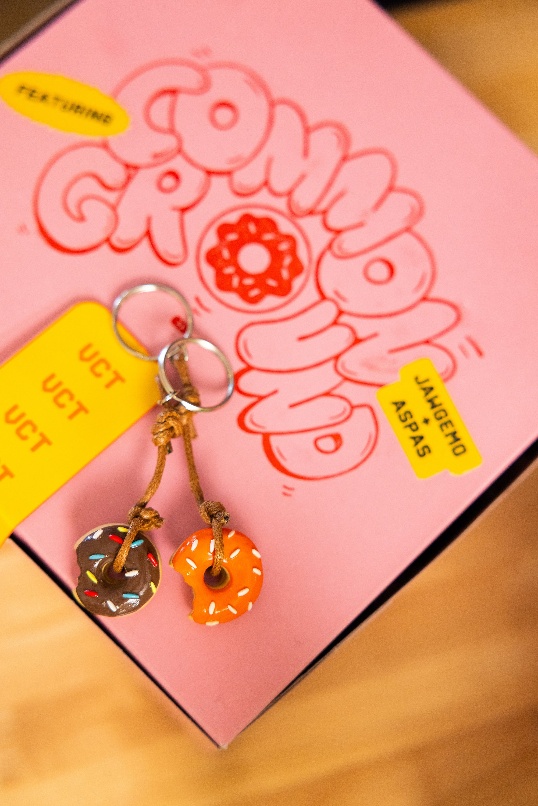
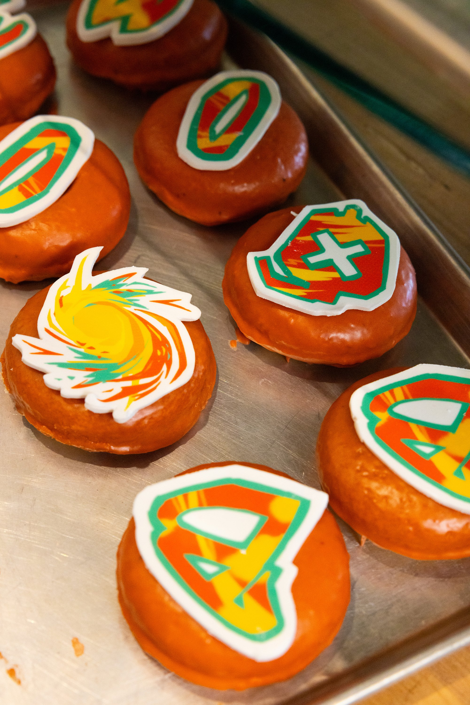
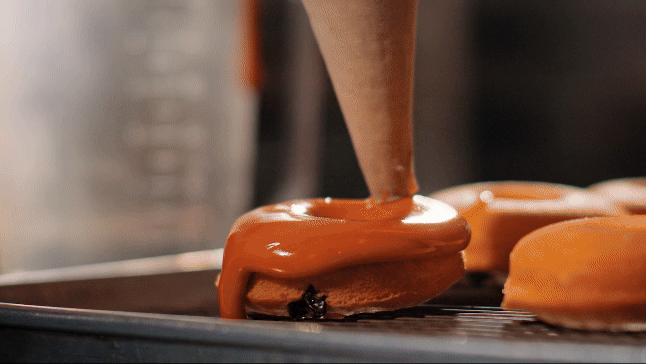
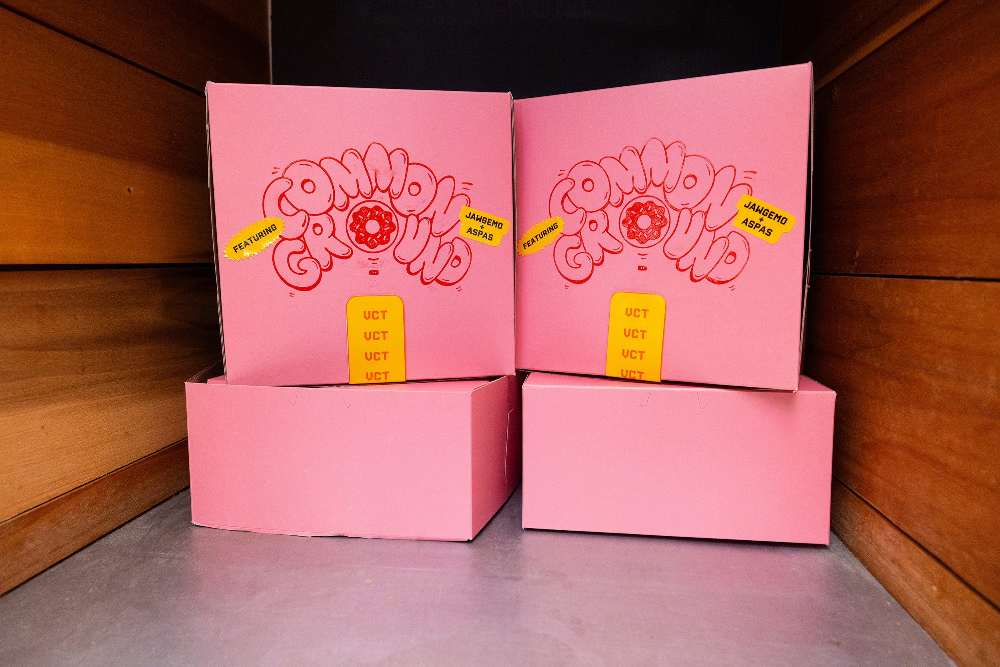
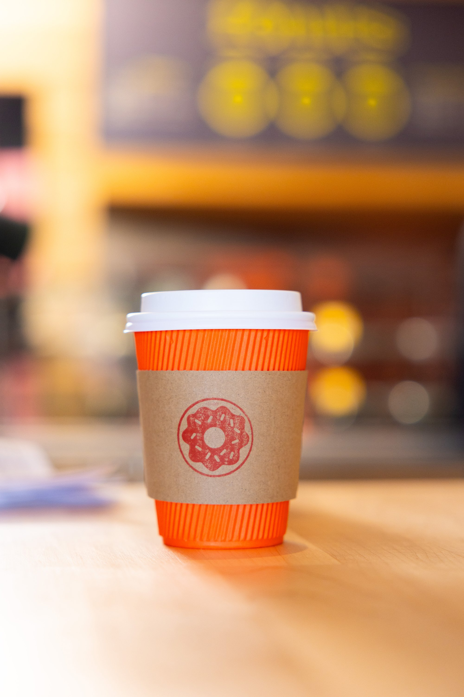
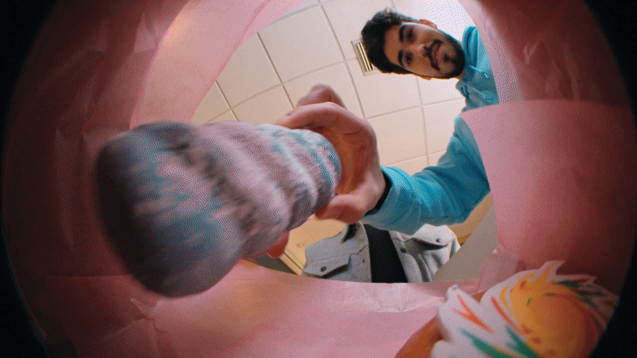

Riot games valorant interview set
Riot Games partnered with Frenzy to create a one-of-a-kind production set inside a real donut shop—reimagined through the lens of VALORANT. The goal: to film an interview where world champions, Jawgemo and Aspas, explored the common ground that connects them beyond the game, hosted by Esports Doug.
The donut shop wasn’t just a backdrop—it became a character in the story. Drawing inspiration from Jawgemo's experience working in his parents' donut shop and Aspas' family-owned computer shop, the set offered a visually compelling, emotionally grounded space for these conversations to unfold.The video garnered 114,642 views on the VCT Americas YouTube channel and was featured inside the global VALORANT client, which has over 14 million active monthly users.
ClientRiot Games
Year2024RoleSet FabricationSet DesignArt DirectionProduced by Riot Games In House Team
A Delicious Collision of Culture, Creativity, and Clutch Moments.
custom propwork - perishables
We worked directly with the bakers to create custom VALORANT-themed donuts, such as ‘Raze’s Rum Raisin,’ ‘Jett’s Cloudburst Twist,’ and ‘The Champions Crumb’. The ‘Champions Crumb’ was a nod to the talent’s shared victory, featuring a black sesame glaze topped with gold flakes to replicate the cracked texture of the Valorant trophy, making it both visually striking and deeply symbolic.
custom propwork - non-perishables
VALORANT motifs, agent references, and thematic colorways were subtly integrated into the set for meaningful cutaways in the video episode. Highlights included the donut gun buddies, classic donut store poster with a punny saying, hand-stamped cup sleeves, and the iconic pink donut box that served as a nod to Los Angeles.






